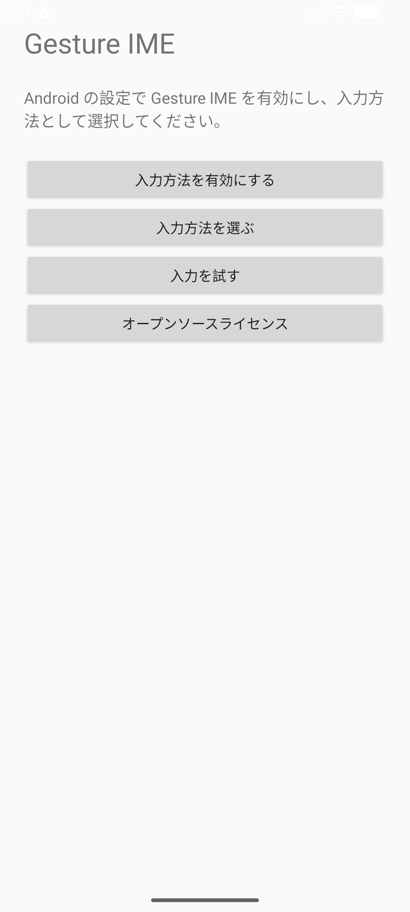
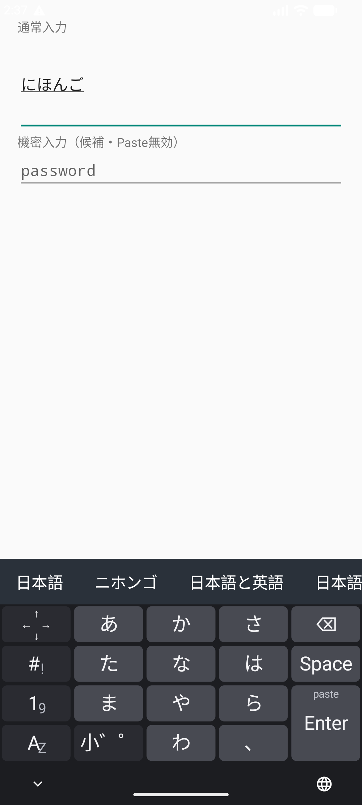

Gesture IME v0.1.0
使い方
Androidへ追加し、入力方法として選び、五つのレイヤーを操作するまでの手順です。
インストール
- APKをZIPでダウンロードし、AndroidのFilesなどでZIPを展開します。
- 展開したgesture-ime-v0.1.0.apkを開き、Androidの案内に従ってインストールします。初回だけ、使用したブラウザまたはファイル管理アプリに「不明なアプリのインストール」の許可が必要な場合があります。
- インストール後に「Gesture IME」を開きます。
v0.1.0は開発用のdebug署名で配布するARM64端末向けAPKです。Android 9（API 28）以上で動作します。

IMEを有効にする
- セットアップ画面からAndroidの「キーボードを管理」を開きます。
- 一覧にある「Gesture IME」を有効にします。Androidが表示する注意を確認して続行します。
- 文字入力欄を開き、ナビゲーションバーのキーボード切替から「Gesture IME」を選びます。
Gesture IMEはネットワーク権限を持ちません。通常入力とMozc変換は端末内で処理します。
五つのレイヤーを切り替える
左下のレイヤーキーは、現在の表示にかかわらず同じ方向へ移動します。中央の文字はタップ時の移動先です。
| 操作 | 移動先 |
|---|---|
| 左フリック | 記号 |
| 上フリック | 日本語 |
| 右フリック | テンキー |
| 下フリック | QWERTY |
| あんをタップ | 日本語 |
| AZをタップ | QWERTY |
日本語を入力して変換する
かなキーをタップすると中央、上下左右へ動かすと各方向のかなが入ります。たとえば「あ」は中央が「あ」、左が「い」、上が「う」、右が「え」、下が「お」です。同じキーを続けて押しても文字が置き換わらず、入力した回数だけ追加されます。
- 左下キーを上へフリックして「日本語」を開きます。
- かなを中央または四方向から選びます。入力中の読みと変換候補が上段に表示されます。
- Spaceをタップして候補を巡回します。候補を直接タップするか、Enterを押すと確定します。
「小゛゜」は直前のかなを小文字、濁点、半濁点へ切り替えます。読みがないときのSpaceは空白、変換中でないときのEnterは入力欄の指定アクションまたは改行になります。

QWERTYで英字と記号を入力する
| 操作 | 入力 |
|---|---|
| 英字キーをタップ | 小文字 |
| 英字キーを上へスワイプ | その一文字だけ大文字 |
| 英字キーを下へフリック | キー上部の数字またはASCII記号 |
| C/Aを上へフリック | 次の一キーへAltを適用 |
| C/Aを下へフリック | 次の一キーへCtrlを適用 |
| 半幅BSを下へフリック | 一文字削除 |
C/Aキーの表示は上側がC、下側がAです。操作は上がAlt、下がCtrlです。未選択時のC/Aタップと、英字レイヤーにある半幅BSのタップは何も入力しません。
カーソル、削除、Paste
Spaceトラックパッド
Spaceを押したまま指を動かすと、カーソルを移動できます。最初に大きく動かした方向に応じて縦または横へ進み、指を離すまで軸が固定されます。横は文字単位、縦は行単位で移動します。
カーソルレイヤー
矢印に加え、「先頭」と「末尾」で入力欄の端へ移動できます。日本語、テンキー、カーソルにある通常幅の削除キーはタップでき、押し続けると連続削除します。
Paste
Enterを下へフリックするとクリップボード先頭のテキストを貼り付けます。パスワード欄ではPasteと候補学習を無効にします。
v0.1.0の制約
- 個人辞書、他サービスの会話ログ取り込み、端末間同期、クラウドバックアップはありません。
- Galaxy Z Fold7の外画面相当412dp、内画面相当840dpをエミュレーターで確認しています。Fold7実機での最終検証は未実施です。
- 配布APKはARM64向けです。
- 操作モックはジェスチャーと画面遷移の説明用です。候補生成には小さな内蔵辞書を使い、Android版のMozc変換を再現するものではありません。